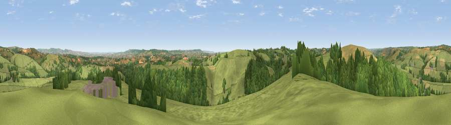

Viewpoint near Ashbrittle
#9999 in England · top 19% of its area beats it · near Ashbrittle · path 106 mWhere it is
The exact computed spot (ST 04325 21375). Click the marker for map links.
Public access: the nearest public right of way is about 106 m away — the final stretch may cross private land. Computed from Natural England's CRoW access layer and OpenStreetMap rights of way — not the legal definitive map. Always verify locally.
The view, rendered

A 360° render of this exact spot computed from the terrain model, tree cover and land cover — summer colours, afternoon light, calibrated against photographs of famous viewpoints. Real trees, hedges and buildings will differ in detail.
The panorama
Grey silhouette: terrain skyline in each direction (720 bearings, Earth curvature and refraction included). Dashed green: skyline with trees (+15 m) and buildings (+8 m) as obstacles. Blue strip: how far the ground is visible on each bearing.
Where the view opens
Wedge length = distance to the farthest visible ground on that bearing (vegetation-aware). Rings at 10, 25 and 50 km.
What fills the view
66% grassland · 22% woodland · 10% cropland · 1% built-up
Angular shares of the visible panorama (visual magnitude), not map area. Landscape diversity 0.39 (0–1 Shannon).
Key numbers
More beautiful places nearby
The staircase of upgrades: each row has a higher view potential than everything closer. Driving times are estimates from straight-line distance, calibrated against real road routing — check an actual route before setting out.
| Place | Direction | Drive | Score |
|---|---|---|---|
| Heniton Hill | W · 1 km | ~2 min | 66.6 |
| Viewpoint near Wiveliscombe | NNE · 5 km | ~11 min | 75.1 |
| Viewpoint near Elworthy | NNE · 13 km | ~24 min | 75.6 |
| Viewpoint near Elworthy | N · 14 km | ~26 min | 79.2 |
| Viewpoint near Roadwater | N · 15 km | ~27 min | 82.9 |
| Viewpoint near Roadwater | N · 16 km | ~28 min | 83.6 |
| Viewpoint near Roadwater | N · 16 km | ~29 min | 84.2 |
| Viewpoint near Roadwater | NNW · 17 km | ~30 min | 85.2 |
50.98380, -3.36437 · source: screening · position refined by local search. Computed location — check access rights before visiting.